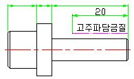

표면경화 열처리법(Ⅱ)
|
항목 종류 |
처 리 법 |
경 화 층 ( ㎜ ) |
변 형 량 |
경 도 (H R C) |
열 처 리 비 용 |
적 용 재 질 |
적 용 부 품 |
특 징 및 비 고 |
|
고주파
담금질 |
고주파로 재료표면에 과전류 일으켜, 이때의 열로 표면을 가열한 뒤, 수류를 통해 급냉 |
0.8∼7 (4이상은 합금강)
|
보 통 (순수 담금질 처리보다 적음) |
41∼65 |
* 대량생산 여부에 따라 가격결정 |
0.4∼0.6% C 탄소강, SNC, SCM, SNCM |
Chain, Pin, 경이 큰 Shaft Gear |
○ 국부경화 가능 ○ 극히 짧은 열처리 시간(수초이내) ○ 자동화가 가능하여, 대량생산에 유리 ○ 형상이 간단함. ○ 안정된 열처리 ○ 고가의 장비 ○ 열처리후, 반드시 뜨임(Tempering)요함. |
|
화 염
경화법 |
강재의 표면을 산소-아세틸렌 화염으로 가열한뒤, 수류를 통해 급냉 |
1.5∼6.5 (4 이상은 합금강)
|
저가 |
0.4∼0.6% C 탄소강, STC(SK), SF, SC, SCM, 탄탈주철 |
Crank Shaft, Cam Shaft |
○ 국부경화 가능 ○ 짧은 열처리 시간(수분 이내) ○ 장비가 간단함. ○ 대상재료의 크기나 형상에 제한을 받지않음. ○ 저가의 장비 ○ 온도제어가 곤란함 |
||
|
진 공
열처리 |
제품을 담은 열처리로 안의 공기를 진공펌프를 이용하여 제거시키고 가열한뒤, 공냉 |
제품전체 열처리되므로 경화층 깊이 무의미
|
침탄법보다는 적고, (연)질화법 보다는 큼 |
62∼66 * STS (SUS) :40∼55 |
( 침탄법 보다 ) 고가 |
STD(SKD), SKH, STS(SUS) |
Gear, Roller |
○ 제품전체 열처리(중심부 포함) ○ 긴 열처리 시간 ○ 외관 우수 |
<비고> ① 도면표기법의 예 : 침탄법( HRC 55 ∼58)
질화법( Hv 450 ∼550)
 ② 부분 표면 열처리 時의 도면 표기법의 예
: 굵은 일점쇄선을 사용하여 열처리 구간 표시하며, 필요시 치수기입(일반적으로, 고주파 담금질 또는 화염경화법을 적용함)